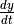

Selecting Values¶
RoadRunner support a wide range of options for selecting SBML and derivative values. Selections can be used to either retrieve or in many cases, store values. We define SBML values as any element specified in the original SBML document, whereas derivative values are a function of one or more SBML values. As these functions typically have no inverse, these are read only selections.
Selections are used a number of RoadRunner methods. They are used to determine what columns are selected in a simulation result and can also be used to directly select model values.
Selection syntax¶
The selection syntax is case sensitive (SBML elements are case sensitive), however it ignores all white space.
Selection Types:
- Time: time
- The string time is interpreted as the current model time.
- Identifier
- Any continuous sequence of printing characters is treated as an SBML identifier with the exception of time, i.e. S1, P1, J0_Keq1, compartment, etc. These have to be valid SBML identifiers. If no SBML identifier is found, an exception is raised. Note that if the identifier is a chemical species, it is interpreted as the species amount.
- Concentration : []
- Following generally accepted chemical nomenclature, any continuous sequence of characters inside a pair of squared brackets, [] is interpreted as a concentration, i.e. [S1], [S2], etc. The identifier must be a valid SBML species, otherwise an exception is raised.
- Rates of Change: '
- Represents the rate of change,  of a species amount. Rates of change selections follow generally accepted mathematical convention of using the single quote, ' to represent a time derivative. A rate of change selection is any identifier followed by a single quote, i.e. S1', S2', P1', etc. A rates of change selection is also valid for SBML elements which are defined by rate rules.
- Elasticity: ee(ReactionId, ParameterId)
- Represents elasticity slection in the form of ee(ReactionId, ParameterId) where ReactionId is a reaction name and ParameterId is a global parameter id. This selection intentionally has a function form, it selects the elasticity control coefficient, RoadRunner.getEE()
- Unscaled Elasticity: uee(ReactionId, ParameterId)
- Represents unscaled elasticity slection in the form of uee(ReactionId, ParameterId) where ReactionId is a reaction name and ParameterId is a global parameter id. This selection intentionally has a function form, it selects the elasticity control coefficient, RoadRunner.getEE()
- Control Coefficient: cc(Id, ParameterId)
- Represents control coefficient selection in the form of cc(Id, ParameterId) where Id is a flux or species name and ParameterId is a global parameter id. The string Id and ParameterId must be valid arguments for RoadRunner.getCC(). This selection intentionally has a function form, it selects the elasticity control coefficient, RoadRunner.getCC()
- Unscaled Control Coefficient: ucc(Id, ParameterId)
- Represents unscaled control coefficient selections in the form of ucc(Id, ParameterId) where Id` is a flux or species name and ParameterId is a global parameter id. The string Id and ParameterId must be valid arguments for RoadRunner.getuCC(). This selection intentionally has a function form, it selects the unscaled elasticity control coefficient, RoadRunner.getuCC()
- Eigenvalue: eigenReal(), eigenImag()
- Represents the eigenvalue of a floating species. eigenReal(identifier) is the real part of eigenvalue while eigenImag(identifier) is the imaginary part of eigenvalue.
- Initial Value: init()
- Represents the initial value of an identifier specified in the SBML document, i.e. init(S1).
- Stoichiometry: stoich(ParameterId, ReactionId)
- Represents the stoichiometric coefficient for a given species and reaction.
Experimenting With Selections¶
One my try individual selection string using the RoadRunner.getValue() method. This takes a selection string, determines if it is valid, and returns the value it selects. For example:
>>> rr.getValue("cc(S1, J4_KS4)")
-0.42955738179207886
Even though they are almost always specified by a string, RoadRunner selections are actually objects. One can create a selection object directly using RoadRunner.createSelection(), and in order to see extended information about, simply display it. For example, using IPython:
>>> sel = rr.createSelection("cc(S1, J4_KS4)")
>>> sel
SelectionRecord({'index' : -1, 'p1' : 'S1', 'p2' : 'J4_KS4', 'selectionType' : CONTROL})
We can see that this is a CONTROL record.
It is also possible to modify the simulation selection list by deleting existing items and adding new ones created with RoadRunner.createSelection(). If someone has does not want to display the concentration of species S2 and instead wants to display the rate of change of species S:
>>> rr.timeCourseSelections
["time", "[S1]", "[S2]", "[S3]", "[S4]"]
>>> sel = rr.createSelection("S1'")
>>> rr.timeCourseSelections[2] = sel
>>> rr.timeCourseSelections
["time", "[S1]", "S1'", "[S3]", "[S4]"]
Even though the selection list intentionally appears as a list of strings, it is actually a list of selection objects. So, elements that are inserted or appended to this list must be selection objects created by RoadRunner.createSelection().
Selecting Simulation Results¶
The columns of the RoadRunner simulation results are determined by the RoadRunner.timeCourseSelections property. This is a list of what values will be displayed in the result, and can be set simply by:
rr.timeCourseSelections = ['time', '[S1]', 'S1', "S1'"]
This example selects the columns time, concentration of S1, amount of S1, and rate of change of S1. One may also have derivative values in the simulation selection, for example, if one wanted to plot the elasticity of a particular reaction:
rr.timeCourseSelections = ['time', '[S1]', "ee(J1, P1)"]
Methods and properties which accept selections¶
| ExecutableModel.__getitem__ | |
| ExecutableModel.__setitem__ |